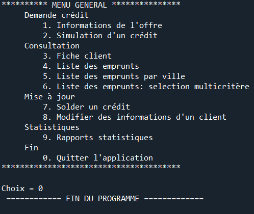
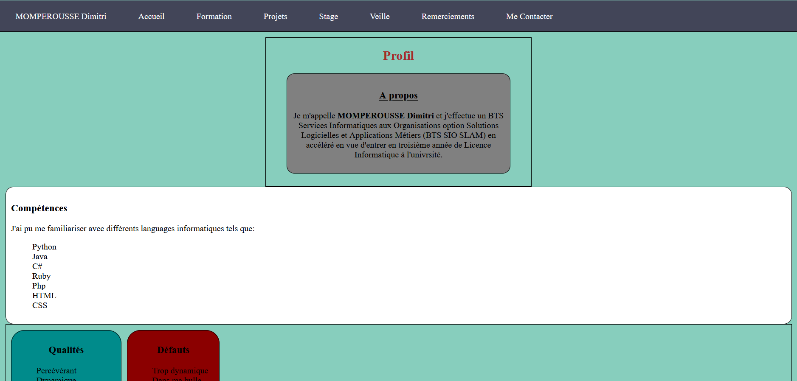

Profil
A propos
Je m'appelle MOMPEROUSSE Dimitri et j'effectue un BTS Services Informatiques aux Organisations option Solutions Logicielles et Applications Métiers (BTS SIO SLAM) en accéléré en vue d'entrer en troisième année de Licence Informatique à l'univrsité.
Compétences
J'ai pu me familiariser avec différents languages informatiques tels que:
- Python
- Java
- C#
- Ruby
- Php
- HTML
- CSS
Qualités
- Percévérant
- Dynamique
- Sait travailler en équipe
Défauts
- Trop dynamique
- Dans ma bulle
- Facilement distrait
Formation
BTS SIO
Le Brevet Technicien Supérieur Services Informatiques aux Organisations (BTS SIO) vise ceux qui souhaitent se former aux métiers d'administrateur réseau ou de développeur. Il s'agit d'un dimplôme de niveau bac+2 reconnu par l'état qui s'effectue en 2 ans (sauf formation accélérée Greta MTE 77). Suite à cette formation, l'élève sera capable de répondre aux attentes des utilisateurs en assurant la disponibilité des service informatiques ainsi que de prendre en compte les besoins informatiques de l'entreprise ou du client.
Lieu formation
Adresse : 97 Boulevard du Ségrais 77185 LOGNES
Téléphone : 01 60 05 75 00
Option SLAM
L'option Solutions Logicielles et Applications Métiers (BTS SIO option SLAM) vise les étudiants intéressés par les métiers informatiques liés à la conception ou encore la maintenance de programes applicatifs. A la fin de cette formation l'étudiant doit être capable d'intégrer, sécuriser des serveurs pour son entreprise.
Débouchées
- Licence informatique
- Licence pro systèmes informatiques et logiciels
- Développeur d'application mobile
- Technicien d'études informatiques
- Programmeur analyste
- Analyste d'exploitation informatique
- Développeur informatique
Projets
Pendu

Le but du projet est de programmer un jeu qui demandera à l'utilisateur de deviner un mot secret en entrant tour par tour les lettres qu'il pense se trouver dans le mot secret. S'il entre une lettre qui ne se trouve pas dans le mot secret, un pendu commence à se dessiner, le joueur à 7 chances jusqu'à ce que le pendu soit totalement déssiné ce qui annoncerait par la même occasion que la défaite du joueur.
Credit
Le but de ce projet est de simuler un les activités d'un banquier en passant par la consultation des clients ayant fais un pré à la banque jusqu'à l'inscription d'un nouveau client souhaitant faire un crédit.
Portfolio
Le portfolio est un projet qui sera aussi évaluer dans une épreuve de BTS. Le but étant de créer une page web recenssant diverses informations à mon sujet.
Stage
Le stage est destiné à donner une représentation concrète du milieu professionnel lié au domaine de l'informatique, tout en lui permettant d'acquérir de nouvelles compétences professionnelles.
Contexte
L'entreprise souhaite développer un site web permettant aux visiteurs de mettre en vente, acheter, louer un logement. Pour ce faire, l'utilisateur aura la possibilité de renseigner différentes informations liées à son biendans un formulaire, de les enregistrer ainsi que de voir la liste des biens mis en vente.
Projet
J'ai eu pour objectif de développer ce site de A à Z en passant par la réalisation de la base de donnée jusqu'à la réalisation des différentes interactions entre le back-end et le front-end, en étant superviser par ma tutrice.
Outils Utilisés
- Java (Eclipse)
- HTML / CSS / Bootstrap
- Spring
- PhpMyAdmin
Veille Informatique
Les Moteurs de Jeux
Un moteur de jeu est un framework comprenant plusieurs outils/librairies liées au dévelopement d'un jeu vidéo. Un moteur puet contenir les outils nécessaires à la conception des musiques des différents niveaux d'un jeu jusqu'aux outils calculant la physique derrière les mouvements d'un personnage.
Liste de moteurs de jeux :
Sites d'actualités :
Remerciements
Je Remercie en premier lieu tout le personnel du Greta de Lognes qui m'a accompagné durant cette courte mais très instructive année.
Ainsi que ma tutrice de stage.
Me contacter
Adresse Mel : dimitri.momperousse.pro@gmail.com
Téléphone portable : 07 67 61 03 49